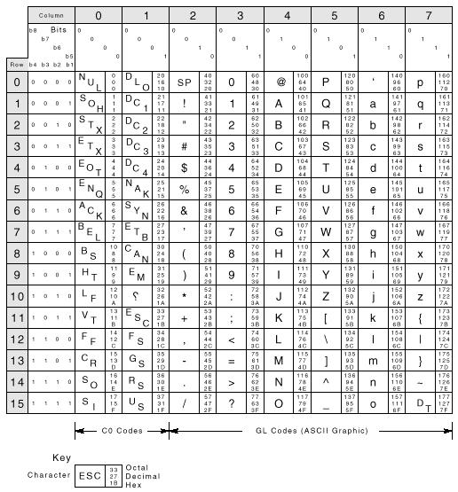
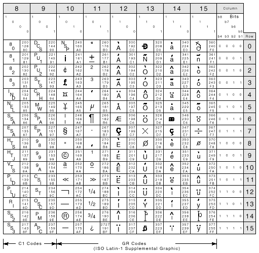

4.1 Introduction
This chapter provides a general description of ANSI escape and control sequences, defining control characters, control functions, escape sequences, and device control strings. This chapter provides information on working with 7- and 8-bit environments and the conventions used in each, and it describes the Show control characters Set-Up feature. In addition, this chapter provides summary tables of the ANSI control functions.
4.2 Control Characters
The purpose of a control character is to control an action such as line spacing, paging, or data flow. The terminal does not display control characters unless you select Show control characters from the Display Set-Up menu. There are two groups of control characters.
| C0 | 7-bit control characters, in columns 0 and 1 of the 8-bit code table |
| C1 | 8-bit control characters, in columns 8 and 9 of the 8-bit code table |
Table 4–1 lists the C0 control characters the VT510 recognizes. Table 4–2 lists the C1 control characters the VT510 recognizes. You can also code C1 control characters as 7-bit escape sequences. Table 4–3 lists the equivalent 7-bit sequences for 8-bit control characters. All three tables give column/row locations to help you find the characters in the character sets.
| Name | Mnemonic Column/Row |
Function |
|---|---|---|
| Null | NUL 0/0 |
NUL has no function (ignored by the terminal). |
| Enquiry | ENQ 0/5 |
Sends the answerback message. (Communications Set-Up) |
| Bell | BEL 0/7 |
Sounds the bell tone if the bell is enabled in Keyboard Set-Up. |
| Backspace | BS 0/8 |
Moves the cursor one character position to the left. If the cursor is at the left margin, no action occurs. |
| Horizontal tab | HT 0/9 |
Moves the cursor to the next tab stop. If there are no more tab stops, the cursor moves to the right margin. HT does not cause text to auto wrap. |
| Line feed | LF 0/10 |
Causes a line feed or a new line operation, depending on the setting of line feed/new line mode. |
| Vertical tab | VT 0/11 |
Treated as LF. |
| Form feed | FF 0/12 |
Treated as LF. |
| Carriage return | CR 0/13 |
Moves the cursor to the left margin on the current line. |
| Shift out (locking shift 1) | SO (LS1) 0/14 |
Maps the G1 character set into GL. You designate G1 by using a select character set (SCS) sequence. |
| Shift in (locking shift 0) | SI (LS0) 0/15 |
Maps the G0 character set into GL. You designate G0 by using a select character set (SCS) sequence. |
| Device control 1 (XON) | DC1 1/1 |
Also known as XON. If XON/XOFF flow control is enabled in Communications Set-Up, DC1 clears DC3 (XOFF). This action causes the VT510 to continue sending characters. |
| Device control 3 (XOFF) | DC3 1/3 |
Also known as XOFF. If XON/XOFF flow control is enabled in Communications Set-Up, DC3 causes the VT510 to stop sending characters. The terminal cannot resume sending characters until it receives a DC1 control character. |
| Cancel | CAN 1/8 |
Immediately cancels an escape sequence, control sequence, or device control string in progress. In this case, the VT510 does not display any error character. |
| Substitute | SUB 1/10 |
Immediately cancels an escape sequence, control sequence, or device control string in progress, and displays a reverse question mark as an error character. |
| Escape | ESC 1/11 |
Introduces an escape sequence. ESC also cancels any escape sequence, control sequence, or device control string in progress. |
| Delete | DEL 7/15 |
Ignored when received, unless a 96- character set is mapped into GL. DEL is not used as a fill character. Digital does not recommend using DEL as a fill character. Use NUL instead. |
| Name | Mnemonic Column/Row |
Function |
|---|---|---|
| Index | IND 8/4 |
Moves the cursor down one line in the same column. If the cursor is at the bottom margin, the page scrolls up. |
| Next line | NEL 8/5 |
Moves the cursor to the first position on the next line. If the cursor is at the bottom margin, the page scrolls up. |
| Horizontal tab set | HTS 8/8 |
Sets a horizontal tab stop at the column where the cursor is. |
| Reverse index | RI 8/13 |
Moves the cursor up one line in the same column. If the cursor is at the top margin, the page scrolls down. |
| Single shift 2 | SS2 8/14 |
Temporarily maps the G2 character set into GL, for the next graphic character. You designate the G2 set by using a select character set (SCS) sequence. |
| Single shift 3 | SS3 8/15 |
Temporarily maps the G3 character set into GL, for the next graphic character. You designate the G3 set by using a select character set (SCS) sequence. |
| Device control string | DCS 9/0 |
Introduces a device control string that uses 8-bit characters. A DCS control string is used for loading function keys or a soft character set. |
| Start of string | SOS 9/8 |
Ignored. |
| VT identification | DECID 9/10 |
Makes the terminal send its device attributes response to the host (same as an ANSI device attributes (DA) sequence). Programs should use the ANSI DA sequence instead. If the printer is in controller mode, the terminal sends the sequence to the printer. |
| Control sequence introducer | CSI 9/11 |
Introduces a control sequence that uses 8-bit characters. |
| String terminator | ST 9/12 |
Ends a device control string. You use ST in combination with DCS. |
| Operating system command | OSC 9/13 |
Introduces an operating system command.* |
| Privacy message | PM 9/14 |
Introduces a privacy message string.* |
| Application program command | APC 9/15 |
Introduces an application program command.* |
| *The VT510 ignores all following characters until it receives a SUB, ST, or any other C1 control character. | ||
| Name | 8-Bit Character | 7-Bit Sequence | ||
|---|---|---|---|---|
| Index | IND 8/4 |
|
||
| Next line | NEL 8/5 |
|
||
| Horizontal tab set | HTS 8/8 |
|
||
| Reverse index | RI 8/13 |
|
||
| Single shift 2 | SS2 8/14 |
|
||
| Single shift 3 | SS3 8/15 |
|
||
| Device control string | DCS 9/0 |
|
||
| Start of string | SOS 9/8 |
|
||
| VT identification | DECID 9/10 |
|
||
| Control sequence introducer | CSI 9/11 |
|
||
| String terminator | ST 9/12 |
|
||
| Operating system command | OSC 9/13 |
|
||
| Privacy message | PM 9/14 |
|
||
| Application program | APC 9/15 |
|
4.3 Control Functions
You use control functions to make the terminal perform special actions in your applications. Examples:
Move the cursor.
Delete a line of text.
Select bold or underlined text.
Change character sets.
Make the terminal emulate a VT52 or VT100 terminal.
There are single-character and multiple-character control functions.
The single-character functions are the C0 and C1 control characters. You can use C0 characters in a 7-bit or 8-bit environment. C1 characters provide a few more functions than C0 characters, but you can only use C1 characters directly in an 8-bit environment.
Multiple-character functions provide many more functions than the C0 and C1 characters. Multiple-character functions can use control characters and graphic characters. There are three basic types of multiple-character functions.
Escape sequences
Control sequences
Device control strings
Many sequences are based on ANSI and ISO standards and are used throughout the industry. Others are private sequences, created by some manufacturers, for specific families of products. ANSI sequences and private sequences follow ANSI and ISO standards for control functions.
In this manual, control functions created for the VT have the prefix DEC in their mnemonic name. For example, column mode has the mnemonic DECCOLM. All other control functions are standardized.
The following sections describe the format for escape sequences, control sequences, and device control strings.
Programming Tip
When you use control functions, remember that the binary codes define a
function—not the graphic characters. This manual uses graphic characters
from a Multinational character set to show control functions. If you use another
character set, the graphic characters for control functions may change, but the
code is always the same.
4.3.1 Sequence Format
This manual shows escape and control sequences in their 8-bit format. You can also use equivalent 7-bit sequences (Table 4–3).
The 8-bit format uses the C0 and C1 control characters and ASCII characters from the Multinational character set. The sequences also show each character's column/row position in the character set table, below the character. The column /row code eliminates confusion over similar-looking characters such as 0 (3/0) and O (4/15).
Spaces appear between characters in a sequence for clarity. These spaces are not part of the sequence. If a space is part of the sequence, the SP (2/0) character appears.
4.3.2 Escape Sequences
An escape sequence uses two or more bytes to define a specific control function. Escape sequences do not include variable parameters, but may include intermediate characters. Here is the format for an escape sequence.
| ESC 1/11 |
I 2/0 to 2/15 |
F 3/0 to 7/14 |
| Escape character |
Intermediate characters (zero or more characters) |
Final character (one character) |
ESC introduces escape sequences. After receiving the ESC control character, the terminal interprets the next received characters as part of the sequence.
I represents zero or more intermediate characters that can follow the ESC character. Intermediate characters come from the 2/0 through 2/15 range of the code table.
F is the final character. This character indicates the end of the sequence. The final character comes from the 3/0 through 7/14 range of the code table. The intermediate and final characters together define a single control function.
For example, the following escape sequence changes the current line of text to double-width, single-height characters:
| ESC 1/11 |
# 2/3 |
6 3/6 |
4.3.3 Control Sequences
A control sequence uses two or more bytes to define a specific control function. Control sequences usually include variable parameters. Here is the format for a control sequence.
| CSI 9/11 |
P...P 3/0 to 3/15 |
I...I 2/0 to 2/15 |
F 4/0 to 7/14 |
| Control sequence introducer |
Parameter (zero or more characters) |
Intermediate (zero or more characters) |
Final (one character) |
CSI is the control sequence introducer. You can also use the equivalent 7-bit sequence, ESC (1/11) [ (5/11), as a substitute for CSI. After receiving CSI, the terminal interprets the next received characters as part of the sequence.
P...P are parameter characters received after CSI. These characters are in the 3/0 to 3/15 range in the code table. Parameter characters modify the action or interpretation of the sequence. You can use up to 16 parameters per sequence. You must use the ; (3/11) character to separate parameters.
All parameters are unsigned, positive decimal integers, with the most significant digit sent first. Any parameter greater than 9999 (decimal) is set to 9999 (decimal). If you do not specify a value, a 0 value is assumed. A 0 value or omitted parameter indicates a default value for the sequence. For most sequences, the default value is 1.
All parameters must be positive decimal integers. Do not use a decimal point in a parameter—the terminal will ignore the command.
If the first character in a parameter string is the ? (3/15) character, it indicates that VT parameters follow. The terminal interprets VT parameters according to ANSI X3.64 and ISO 6429.
The VT510 processes two types of parameters, numeric and selective.
4.3.3.1 Numeric Parameters
A numeric parameter indicates a number value such as a margin location. In this manual, numeric parameters appear as actual values or as Pn, Pn1, Pn2, and so on.
The following is an example of a control sequence with numeric parameters:
| CSI 9/11 |
5 3/5 |
; 3/11 |
|
r 7/2 |
||
| Control sequence introducer |
First numeric parameter |
Delimiter | Second numeric parameter |
Final character |
This sequence sets the top and bottom margins of the current page. The top margin is at line 5, the bottom is at line 20. The ; (3/11) separates the two parameters.
4.3.3.2 Selective Parameters
A selective parameter selects an action associated with the specific parameter. In this manual, selective parameters usually appear as Ps, Ps1, Ps2, and so on.
The following is an example of a control sequence using selective parameters:
| CSI 9/11 |
1 3/1 |
; 3/11 |
4 3/4 |
m 6/13 |
| Control sequence introducer |
First selective parameter |
Delimiter | Second selective parameter |
Final character |
This control sequence turns on the bold and underline attribute at the cursor position. The parameters are 1 (indicating the bold attribute) and 4 (indicating the underline attribute). The ; (3/11) delimiter separates the two parameters.
I...I are zero or more intermediate characters received after CSI. These characters are in the 2/0 to 2/15 range.
F is the final character from the 4/0 to 7/14 range. The final character indicates the end of the sequence. The intermediate and final characters together define a control function. If there are no intermediate characters, the final character defines the function.
4.3.4 Device Control Strings
Device control strings (DCS), like control sequences, use two or more bytes to define specific control functions. However, a DCS also includes a data string. Here is the format for a device control string.
| DCS 9/0 |
P...P 3/0 to 3/15 |
I...I 2/0 to 2/15 |
F 4/0 to 7/14 |
Data string ************ |
ST 9/12 |
| Device control string introducer |
Zero or more para- meters |
Zero or more inter- mediates |
Final | String | String terminator |
DCS is the device control string introducer. DCS is the C1 control character at position 9/0. You can also use the equivalent 7-bit sequence, ESC (1/11) P (5/0). After receiving DCS, the terminal processes the next received characters as part of the string function.
P...P are parameter characters received after DCS. The use of parameter characters in a device control string is a Digital extension to the ANSI syntax. According to ANSI standards, any elements included after DCS are part of the data string.
Parameter characters are in the 3/0 to 3/15 range. They modify the action or interpretation of the device control string. You can use up to 16 parameters per string. Each parameter is separated with a ; (3/11) character. These characters follow the same rules as in a control sequence. See the "Section 4.3.3" section in this chapter.
I...I are zero or more intermediate characters received after CSI. These characters are in the 2/0 to 2/15 range.
F is the final character in the 4/0 to 7/14 range. The final character indicates the end of the string. The intermediate and final characters define the string. If there are no intermediates, the final character defines the string.
Data string follows the final character and usually includes several definition strings. Each definition string can be several characters in length. Individual strings are separated by the ; (3/11) delimiter.
ST is the string terminator. ST (9/12) indicates the end of a string. You can also use the equivalent 7-bit sequence, ESC (1/11) \ (5/12).
The following is an example of a device control string:
| DCS 9/0 |
0 3/0 |
! 2/1 |
u 7/5 |
% 2/5 |
5 3/5 |
ST 9/12 |
| Device control string introducer |
Para- meter |
Inter- mediate |
Final | Data string |
String terminator |
This device control string assigns a Supplemental Graphic set as the user-preferred supplemental set.
4.3.5 Using Control Characters in Sequences
You can use control characters—ESC, CAN, and SUB—to interrupt or recover from errors in escape sequences, control sequences, and device control strings.
- You can send ESC (1/11) to cancel a sequence in progress and begin a new sequence.
- You can send CAN (1/8) to indicate the present data is in error or to cancel a sequence in progress. The VT510 interprets the characters following CAN as usual.
- You can send SUB (1/10) to cancel a sequence in progress. The VT510 interprets the characters following SUB as usual.
The VT510 does not lose data when errors occur in escape or control sequences and device control strings. The terminal ignores unrecognized sequences and strings, unless they end a current escape sequence.
4.3.6 7-Bit Code Extension Technique
You can represent all C1 control characters as 7-bit escape sequences. You can use the C1 characters indirectly, by representing them as 2-character escape sequences. ANSI calls this technique a 7-bit code extension. The 7-bit code extension provides a way of using C1 characters in applications written for a 7-bit environment. Here are some examples.
| 8-Bit C1 Character |
7-Bit Code Extension Escape Sequence |
|||
|---|---|---|---|---|
|
|
|||
|
|
|||
|
|
|||
|
|
In general, you can use the 7-bit code extension technique in two ways.
- You can represent any C1 control character as a 2-character escape sequence. The second character of the sequence has a code that is 40 16 or 64 10 less than the code of the C1 character.
- You can make any escape sequence whose second character is in the range of 4/0 through 5/15 one byte shorter by removing the ESC character and adding 40 16 to the code of the second character. This generates an 8-bit control character. For example, you can change ESC [ to CSI with this method.
4.4 Working with 7-Bit and 8-Bit Environments
There are three requirements for using one of the terminal's 8-bit character sets.
- Your program and communication environment must be 8-bit compatible.
- The terminal cannot be in national replacement character set mode (DECNRCM).
- The terminal must operate in VT level 4 or PC TERM mode. When the terminal operates in VT level 1 mode or VT52 mode, you are limited to working in a 7-bit environment.)
The following sections describe conventions that apply in VT level 4.
4.4.1 Conventions for Codes Received by the Terminal
The terminal expects to receive character codes in a form compatible with 8-bit coding. Your application can use the C0 and C1 control characters, as well as the 7-bit C1 code extensions, if necessary. The terminal always interprets these codes correctly.
When your program sends GL or GR codes, the terminal interprets the character codes according to the graphic character sets in use. When you turn on or reset the terminal, you automatically select the ASCII character set in GL and the current user-preferred character set in GR. You select the user-preferred set in the Terminal type, VT default character set Set-Up menu. This mapping assumes the current terminal mode is VT level 4.
4.4.2 Conventions for Codes Sent by the Terminal
The terminal can send data to an application in two ways.
- Directly from the keyboard
- In response to commands from the host (application or operating system)
Most function keys on the keyboard send multiple-character control functions. Many of these functions start with CSI (9/11) or SS3 (8/15), which are C1 characters. If your application cannot handle 8-bit characters, you can make the terminal automatically convert all C1 characters to their equivalent 7-bit code extensions before sending them to the application. To convert C1 characters, you use the DECSCL commands.)
By default, the terminal is set to automatically convert all C1 characters sent to the application to 7-bit code extensions. However, to ensure the correct mode of operation, always use the appropriate DECSCL commands.
In VT level 4, the terminal can send GR graphic characters to an application, even if the application cannot handle 8-bit codes. However, in a 7-bit environment, the terminal sends C1 controls as 7-bit escape sequences and does not send 8-bit graphic characters.
New programs should accept both 7-bit and 8-bit forms of the C1 control characters.
4.5 Show Control Characters
The VT510 lets you display control characters as graphic characters, when you want to debug your applications. With this mode enabled, the terminal does not perform all control functions.
To enable this mode, use the Display Set-Up menu and enable the checkbox for Show control characters; or you can use the control representation mode (CRM) control sequence. (You cannot select this mode with an escape sequence.)
In VT level 4 mode
The terminal temporarily loads a special graphic character set into C0, GL, C1,
and GR. Figures 4–1 and 4–2 shows this special set, called the display controls
font. The terminal uses this font to display control characters on the screen.
In VT level 1 or VT52 mode
The terminal temporarily loads the left half of the display controls font into
C0 and GL. The terminal uses this half of the font to display all C0 and GL
characters. (C1 and GR are meaningless in VT52 or VT100 emulations.)
When displaying 36 or more lines on the screen
When you display 36 or more lines on the screen (DECSNLS), the terminal uses
a smaller font to display control characters. The smaller font represents each
control character as a two-character symbol instead of a three-character symbol.
Figures 4–1 and 4–2 show what the control characters look like when displaying
24 or 25 lines on the screen. Table 4–4 shows the abbreviations for the control
characters in the smaller font.
| Control Character in Large Font |
Control Character in Small Font |
Name |
|---|---|---|
| NUL | NL | Null |
| SOH | SH | Start of heading |
| STX | SX | Start of text |
| ETX | EX | End of text |
| EOT | ET | End of transmission |
| ENQ | EN | Enquire |
| ACK | AK | Acknowledge |
| BEL | BL | Bell |
| BS | BS | Backspace |
| HT | HT | Horizontal tab |
| LF | LF | Line feed |
| VT | VT | Vertical tab |
| FF | FF | Form feed |
| CR | CR | Carriage return |
| SO | SO | Shift out |
| SI | SI | Shift in |
| DLE | DE | Data link escape |
| DC1 | D1 | Device control 1 (XON) |
| DC2 | D2 | Device control 2 |
| DC3 | D3 | Device control 3 (XOFF) |
| DC4 | D4 | Device control 4 |
| NAK | NK | Negative acknowledge |
| SYN | SY | Synchronous idle |
| ETB | EB | End of transmission block |
| CAN | CA | Cancel |
| EM | EM | End of medium |
| SUB | SB | Substitute |
| ESC | EC | Escape |
| FS | FS | Field separator |
| GS | GS | Group separator |
| RS | RS | Record separator |
| US | US | Unit separator |
| IND | IN | Index |
| NEL | NE | Next line |
| SSA | SA | Start selected area |
| ESA | EA | End selected area |
| HTS | HS | Horizontal tab set |
| HTJ | HJ | Horizontal tab with justify |
| VTS | VS | Vertical tab set |
| PLD | PD | Partial line down |
| PLU | PU | Partial line up |
| RI | RI | Reverse index |
| SS2 | S2 | Single shift 2 |
| SS3 | S3 | Single shift 3 |
| DCS | DC | Device control string |
| PU1 | P1 | Private use 1 |
| PU2 | P2 | Private use 2 |
| STS | SS | Set transmit state |
| CCH | CC | Cancel character |
| MW | MW | Message waiting |
| SPA | SP | Start protected area |
| EPA | EP | End protected area |
| CSI | CS | Control sequence introducer |
| ST | ST | String terminator |
| OSC | OS | Operating system command |
| PM | PM | Private message |
| APC | AP | Application program command |
| NS | NS | No-break space |
Exceptions
Some control functions still work in this mode.
- LF, FF, and VT cause a carriage return and line feed (CR LF) that move the cursor to a new line. The terminal displays the LF, FF, or VT character before performing the new line function.
- XOFF (DC3) and XON (DC1) maintain flow control, if enabled in set-up. The terminal displays the DC1 or DC3 character after performing the control function.
- The terminal does not display SSU session management commands.
 |
 |
4.6 ANSI Control Function Tables
The tables in this section summarize the ANSI Control Functions for ANSI-compatible VT mode and PCTerm mode. Default conditions are in boldface type. Chapter 5 describes all the ANSI control functions in alphabetical order by mnemonic.
Table 4–5 lists the text processing control functions; Table 4–6, the reports control functions; Table 4–7, the terminal management control functions; Table 4–8, the keyboard processing control functions; and Table 4–9, the communications control functions. In these tables, the word "same" signifies the same control sequences as in the VT510 column.